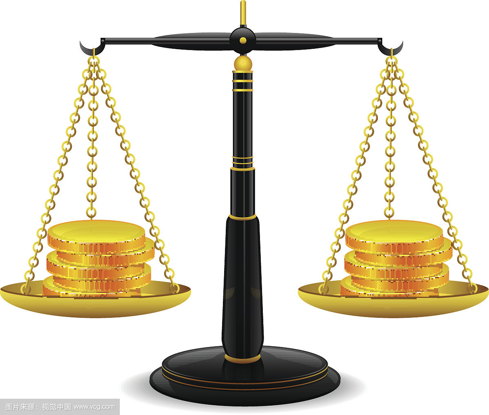
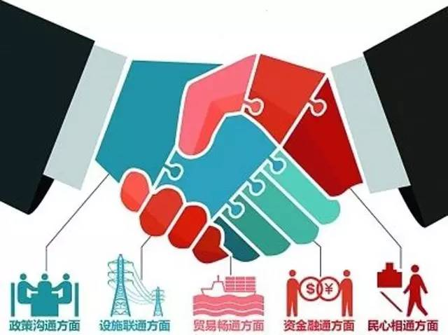

"The Belt and Road" is the road of mutual benefit and win-win results, in the area under the framework of all the way, the world could usher in a wave of new economy, the economic tide, will "neighbourhood" all the way to build the road to peace, caused strong repercussions in the whole world.
"The Belt and Road" international cooperation peak BBS, back to see "The Belt and Road" of a few years, this important initiative to quickly get international society wide attention and positive response, and formed a large number of emerging opportunities.
The construction and operation of china-Kazakhstan oil and gas pipelines usher in a new historic opportunity and the people of the two countries actually enjoy the fruits of cooperation. While benefiting China's hundreds of millions of people, china-Kazakhstan energy cooperation has provided strong support for the social and economic development and improving people's livelihood.
"the Belt and Road" is in the era of financial crisis, as the world's economic growth engine of China, its production capacity, technology and capital advantages, experience and patterns into the market and the cooperation advantages, implement a great innovation of all-around opening up. Through "the Belt and Road", we will share China's reform and development dividend and China's development experience and lessons. China will work hard to promote cooperation and dialogue among countries along the belt and road, and build a new global development partnership that is more equal and balanced to consolidate the foundation for long-term and stable development of the world economy.
The traditional globalization is caused by the sea, which is born from the sea. The coastal regions and maritime countries develop first, and the land countries and the inland regions lag behind, forming a huge gap between rich and poor. Carry forward traditional globalization from Europe, from America, form a "dilemma" of the international order, cause from belong to the west, the east rural to urban, from land belongs to the sea and a series of unreasonable imbalance effect. Now, One Belt And One Road is pushing global rebalancing."One Belt And One Road" encourages opening up to the west, driving the development of the western region and the development of landlocked countries and regions such as central Asia and Mongolia.
China's reform and opening up is the world's biggest innovation, "The Belt And Road" as a strategy, all-round opening to the outside are on economic corridor theory, economy theory, international cooperation theory innovation in the 21st century economic development theory, regional cooperation theory, globalization theory. "The Belt And Road" emphasizes to discuss, and sharing principle, beyond the Marshall plan, foreign aid, and walk out strategy, bring new ideas to international cooperation in the 21st century "Economic zone" concept, for example, is the innovation of regional economic cooperation pattern, in which economic corridor - economic corridor between China and Russia, the new Asia-Europe continental bridge.
